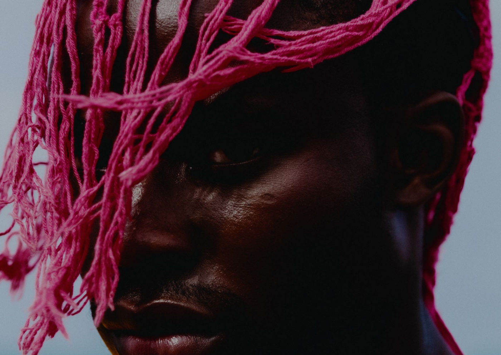

Mitologia e realidade se encontram na exposição O Boto na Zona Norte de SP

Mostra gratuita no CCJ explora cultura, migração e identidade por meio da arte
A partir do dia 15 de março, a exposição "O Boto" entra em cartaz no Centro Cultural da Juventude Ruth Cardoso (CCJ), na Zona Norte de São Paulo. Com curadoria de Gabriel Babolim, a mostra reúne pinturas e fotografias dos artistas Luciano Maia (PA) e Rafael Paiva (CE), explorando a intersecção entre narrativas folclóricas, identidade cultural e migração.
🎨 A visitação é gratuita e acontece até 18 de maio de 2025.
Abertura e programação especial
📅 Abertura oficial: 15 de março (sábado), às 15h, com a presença dos artistas e uma apresentação de seresta.
Além da exposição, o projeto contará com encontros de arte-educação, incluindo visitas guiadas e oficinas práticas, cujas datas serão divulgadas em breve. Durante todo o período da mostra, o público pode solicitar acompanhamento do setor educativo, de quinta a domingo, das 12h às 18h.
Sobre a exposição O Boto
A mostra utiliza a lenda do boto-cor-de-rosa, figura mitológica das populações ribeirinhas do Baixo Amazonas, para discutir questões de migração, pertencimento e diversidade cultural no Brasil.
As obras apresentam uma fusão entre o imaginário folclórico e o cotidiano, trazendo elementos da tradição oral amazônica e práticas culturais do Ceará, principalmente das regiões de Fortaleza e Carnaubal. Os artistas reinterpretam a realidade através de uma estética que mistura o fantástico e o real, revelando uma visão mágica das experiências migratórias.
Na sala de exposições do CCJ, as obras serão apresentadas em estruturas de biombo, criando um percurso imersivo que conduz o visitante até uma instalação interativa de pinturas em tecido, onde o público poderá adentrar as cenas representadas.
"O objetivo da mostra é celebrar a multiplicidade cultural do Brasil e provocar reflexões sobre movimentos migratórios e identidade. A cultura não é estática, mas um oceano onde diferentes canais se encontram, enriquecendo a experiência humana." – Gabriel Babolim, curador da exposição
Sobre os artistas
🎭 Luciano Maia (PA) – Artista visual e designer de superfícies, natural de Santarém, Pará. Atua principalmente com desenho, pintura e investigações têxteis, criando narrativas visuais em suas obras. Em 2024, realizou sua primeira exposição individual no Paço das Artes e participou de diversas mostras coletivas.
📸 Rafael Paiva (CE) – Fotógrafo e diretor de arte, nascido em Carnaubal, Ceará. Atua no circuito de moda nacional e possui sua própria marca de pesquisa e moda circular. Em 2024, foi premiado no Panorama Latino-Contemporâneo do Festival Photo Vogue, realizado em Milão.
Um projeto contemplado pelo Programa VAI
A exposição O Boto foi contemplada pela 21ª edição do Programa de Valorização de Iniciativas Culturais (VAI), da Secretaria Municipal de Cultura e Economia Criativa de São Paulo. O programa apoia iniciativas culturais periféricas, promovendo acesso à arte e estímulo ao pensamento crítico sobre a produção contemporânea.
SERVIÇO – Exposição O Boto
📍 Local: Centro Cultural da Juventude Ruth Cardoso (CCJ)
📌 Endereço: Av. Dep. Emílio Carlos, 3641 – Cachoeirinha, São Paulo/SP
🎭 Classificação: Livre
🎟 Entrada gratuita
📅 Abertura: 15 de março de 2025 (sábado), às 15h
📅 Visitação: Terça a domingo, das 10h às 21h
📅 Período da exposição: 15 de março a 18 de maio de 2025
💡 Atividades educativas: Visitas guiadas e oficinas (datas a serem divulgadas)